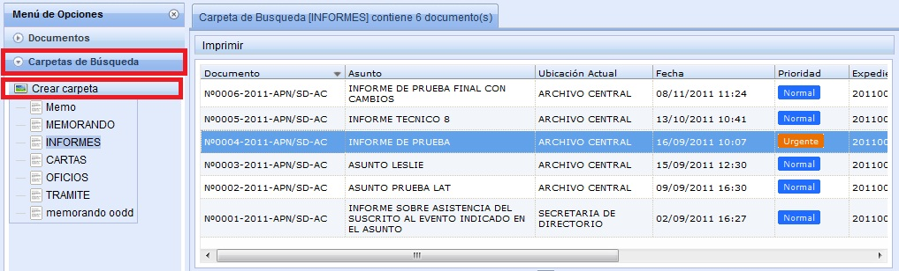
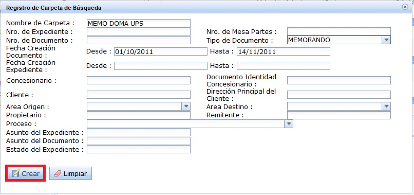
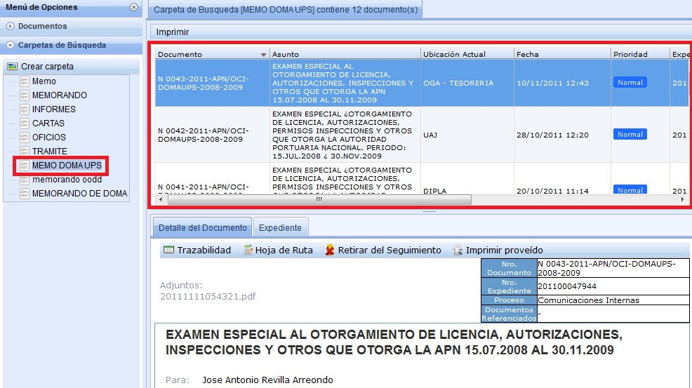

Detalle de Carpeta de Búsqueda:
En la siguiente pantalla se muestra al usuario un listado de Documentos correspondientes a cada Tipo de Documento, según el usuario seleccione la carpeta:

Además el usuario tiene la opción de Crear Carpeta como se muestra en la siguiente pantalla: En donde debe de ingresar como datos obligatorios el Nombre de la Carpeta, que puede ser (MEMO DOMA UPS), Tipo de Documento y Fecha de Creación del Documento (Desde,Hasta)

Al crear la carpeta se muestra el siguiente listado:

Created with the Personal Edition of HelpNDoc: Free iPhone documentation generator